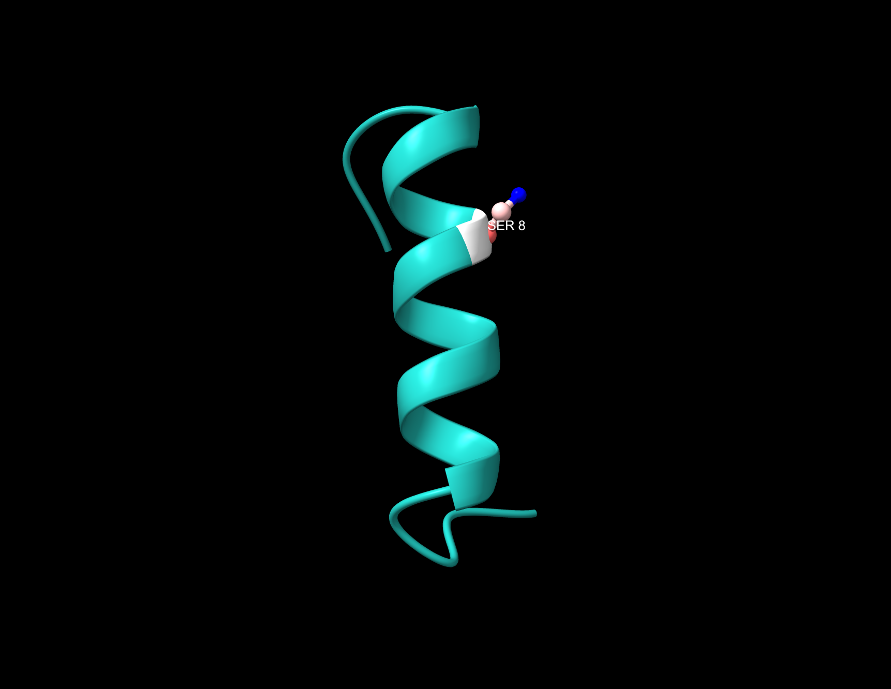

Animal-Free Discovery
Synthetic nanobody libraries reduce dependence on animal immunisation and enable more controlled discovery workflows.
NEXT-GENERATION BIOLOGICS
NanoForge Biologics is building an AI-enabled, animal-free platform for programmable nanobody discovery for therapeutics, diagnostics and research.

WHY NANOFORGE
Traditional antibody discovery can be slow, expensive and dependent on animal immunisation. NanoForge is developing a more programmable approach that combines computational design with synthetic biology.
Synthetic nanobody libraries reduce dependence on animal immunisation and enable more controlled discovery workflows.
Computational prioritisation and experimental screening support faster design-build-test cycles.
Stability, expression and specificity can be considered earlier in the discovery process.
OUR PLATFORM
NanoForge combines computational design, synthetic biology and experimental screening to create high-quality nanobody candidates faster and without animal immunisation.
Computational methods help prioritise nanobody sequences with promising binding, stability and developability characteristics.
Animal-free libraries are engineered to provide diverse, target-focused starting points for nanobody discovery.
Scalable screening workflows identify and rank promising binders against therapeutically and commercially relevant targets.
Candidates are evaluated early for expression, stability, specificity and manufacturability to reduce downstream failure.
OUR SERVICES
NanoForge Biologics supports early-stage research and development through practical protein science, antibody purification and assay development services.
Support for expression strategy, optimisation and production across bacterial and mammalian systems.
Purification workflow development using affinity, ion-exchange and size-exclusion chromatography.
Analytical support including SDS-PAGE, Western blotting, concentration analysis and quality assessment.
Design and optimisation of fit-for-purpose biochemical and binding assays for research applications.
ABOUT NANOFORGE
NanoForge Biologics is being developed by scientists with experience in protein engineering, recombinant protein production, antibody purification, assay development and synthetic biology.
Our mission is to create a scalable platform for programmable nanobody discovery that supports therapeutic, diagnostic, imaging and research applications.
To make high-quality nanobody discovery faster, more predictable and accessible through an integrated animal-free platform.
OUR TEAM
NanoForge Biologics is being developed by scientists with experience across protein science, antibody purification, cellular biology, microscopy and synthetic biology.
Founder
Protein scientist with experience in recombinant protein expression, purification, assay development, structural modelling and synthetic biology.
OUR PROGRESS
NanoForge Biologics is progressing through early company formation, laboratory access, platform development and strategic partnership building.
Establishing the legal, operational and commercial foundations required to build a scalable biotechnology company.
Developing access to suitable laboratory infrastructure for protein science, assay development and nanobody discovery work.
Designing an integrated workflow combining synthetic libraries, computational prioritisation and experimental screening.
Engaging with incubators, investors, research organisations and potential customers to accelerate development.
GET IN TOUCH
We welcome conversations with investors, research partners, incubators and organisations interested in next-generation nanobody discovery.